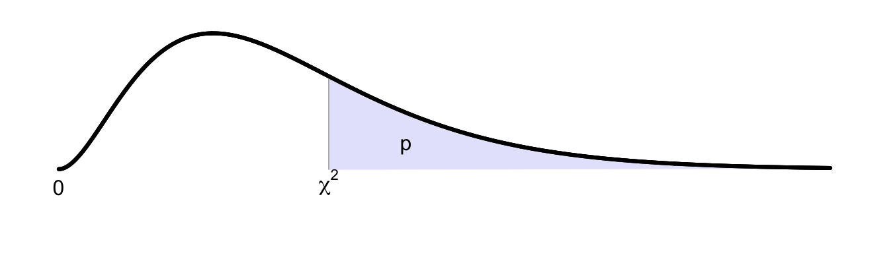

D Critical values for \(\chi^2\)-distribution

The critical value \((\chi^2)^*\) given below has a critical probability \(p\) under \(H_0\), i.e. \(P(\chi^2 \geq (\chi^2)^*|H_0)=p\).
The table below provides the critical boundary values \((\chi^2)^*\) for much used critical probabilities \(p\), for the degrees of freedom indicated in the first column.
| p | 0.2 | 0.1 | 0.05 | 0.025 | 0.01 | 0.005 | 0.0025 | 0.001 | |
|---|---|---|---|---|---|---|---|---|---|
| 1 | 1.64 | 2.71 | 3.84 | 5.02 | 6.63 | 7.88 | 9.14 | 10.83 | |
| 2 | 3.22 | 4.61 | 5.99 | 7.38 | 9.21 | 10.60 | 11.98 | 13.82 | |
| 3 | 4.64 | 6.25 | 7.81 | 9.35 | 11.34 | 12.84 | 14.32 | 16.27 | |
| 4 | 5.99 | 7.78 | 9.49 | 11.14 | 13.28 | 14.86 | 16.42 | 18.47 | |
| 5 | 7.29 | 9.24 | 11.07 | 12.83 | 15.09 | 16.75 | 18.39 | 20.52 | |
| 6 | 8.56 | 10.64 | 12.59 | 14.45 | 16.81 | 18.55 | 20.25 | 22.46 | |
| 7 | 9.80 | 12.02 | 14.07 | 16.01 | 18.48 | 20.28 | 22.04 | 24.32 | |
| 8 | 11.03 | 13.36 | 15.51 | 17.53 | 20.09 | 21.95 | 23.77 | 26.12 | |
| 9 | 12.24 | 14.68 | 16.92 | 19.02 | 21.67 | 23.59 | 25.46 | 27.88 | |
| 10 | 13.44 | 15.99 | 18.31 | 20.48 | 23.21 | 25.19 | 27.11 | 29.59 | |
| 11 | 14.63 | 17.28 | 19.68 | 21.92 | 24.72 | 26.76 | 28.73 | 31.26 | |
| 12 | 15.81 | 18.55 | 21.03 | 23.34 | 26.22 | 28.30 | 30.32 | 32.91 | |
| 13 | 16.98 | 19.81 | 22.36 | 24.74 | 27.69 | 29.82 | 31.88 | 34.53 | |
| 14 | 18.15 | 21.06 | 23.68 | 26.12 | 29.14 | 31.32 | 33.43 | 36.12 | |
| 15 | 19.31 | 22.31 | 25.00 | 27.49 | 30.58 | 32.80 | 34.95 | 37.70 | |
| 16 | 20.47 | 23.54 | 26.30 | 28.85 | 32.00 | 34.27 | 36.46 | 39.25 | |
| 17 | 21.61 | 24.77 | 27.59 | 30.19 | 33.41 | 35.72 | 37.95 | 40.79 | |
| 18 | 22.76 | 25.99 | 28.87 | 31.53 | 34.81 | 37.16 | 39.42 | 42.31 | |
| 19 | 23.90 | 27.20 | 30.14 | 32.85 | 36.19 | 38.58 | 40.88 | 43.82 | |
| 20 | 25.04 | 28.41 | 31.41 | 34.17 | 37.57 | 40.00 | 42.34 | 45.31 | |
| 21 | 26.17 | 29.62 | 32.67 | 35.48 | 38.93 | 41.40 | 43.78 | 46.80 | |
| 22 | 27.30 | 30.81 | 33.92 | 36.78 | 40.29 | 42.80 | 45.20 | 48.27 | |
| 23 | 28.43 | 32.01 | 35.17 | 38.08 | 41.64 | 44.18 | 46.62 | 49.73 | |
| 24 | 29.55 | 33.20 | 36.42 | 39.36 | 42.98 | 45.56 | 48.03 | 51.18 | |
| 25 | 30.68 | 34.38 | 37.65 | 40.65 | 44.31 | 46.93 | 49.44 | 52.62 | |
| 30 | 36.25 | 40.26 | 43.77 | 46.98 | 50.89 | 53.67 | 56.33 | 59.70 | |
| 40 | 47.27 | 51.81 | 55.76 | 59.34 | 63.69 | 66.77 | 69.70 | 73.40 | |
| 50 | 58.16 | 63.17 | 67.50 | 71.42 | 76.15 | 79.49 | 82.66 | 86.66 | |
| 100 | 111.67 | 118.50 | 124.34 | 129.56 | 135.81 | 140.17 | 144.29 | 149.45 | |
| 200 | 216.61 | 226.02 | 233.99 | 241.06 | 249.45 | 255.26 | 260.74 | 267.54 | |
| 400 | 423.59 | 436.65 | 447.63 | 457.31 | 468.72 | 476.61 | 483.99 | 493.13 |